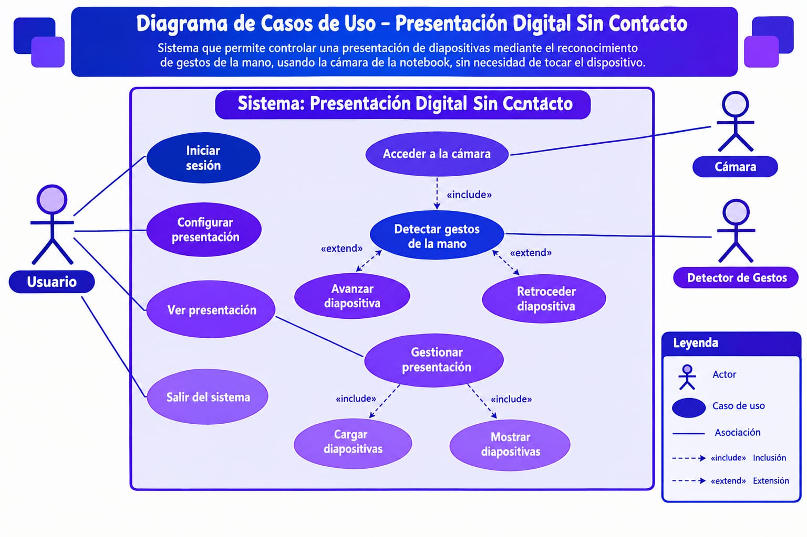

Qué puede hacer cada persona o dispositivo con el sistema, sin entrar en cómo está programado por dentro.
Antes de ver el diagrama, tres ideas para poder leerlo:
Es quien interactúa con el sistema desde afuera. Se dibuja como un muñeco, aunque no siempre es una persona: también puede ser un dispositivo, como la cámara.
Es algo que el sistema permite hacer, visto desde quien lo usa. Se dibuja como un óvalo dentro del recuadro del sistema y su nombre empieza con un verbo, por ejemplo, Avanzar diapositiva.
La línea continua une a un actor con los casos de uso en los que participa. La flecha punteada «include» indica que un caso de uso necesita siempre a otro para funcionar. La flecha punteada «extend» indica que un caso de uso agrega un comportamiento opcional a otro.

Los actores, los casos de uso y cómo se relacionan entre sí.
Es la persona que da la presentación, por ejemplo, un docente o un estudiante. Se coloca frente a la cámara y hace los gestos con la mano.
Es la cámara web de la computadora. Entrega al sistema las imágenes de la mano del usuario.
| Caso de uso | Quién participa | Qué ocurre |
|---|---|---|
| Acceder a la cámara | Cámara | El sistema abre la cámara web para recibir imágenes. Si no puede abrirla, muestra un mensaje de error. |
| Detectar gestos de la mano | Usuario, Cámara | El sistema analiza cada imagen, ubica la mano y reconoce si el usuario junta los dedos. Incluye siempre «Acceder a la cámara». |
| Avanzar diapositiva | Usuario | Al juntar el pulgar con el índice, el sistema pulsa la flecha derecha y la presentación avanza. |
| Retroceder diapositiva | Usuario | Al juntar el pulgar con el dedo medio, el sistema pulsa la flecha izquierda y la presentación retrocede. |
| Salir del sistema | Usuario | Al cerrar la ventana, el sistema apaga la cámara y libera los recursos. |
Así se conectan los casos de uso cuando el usuario quiere pasar a la diapositiva siguiente: